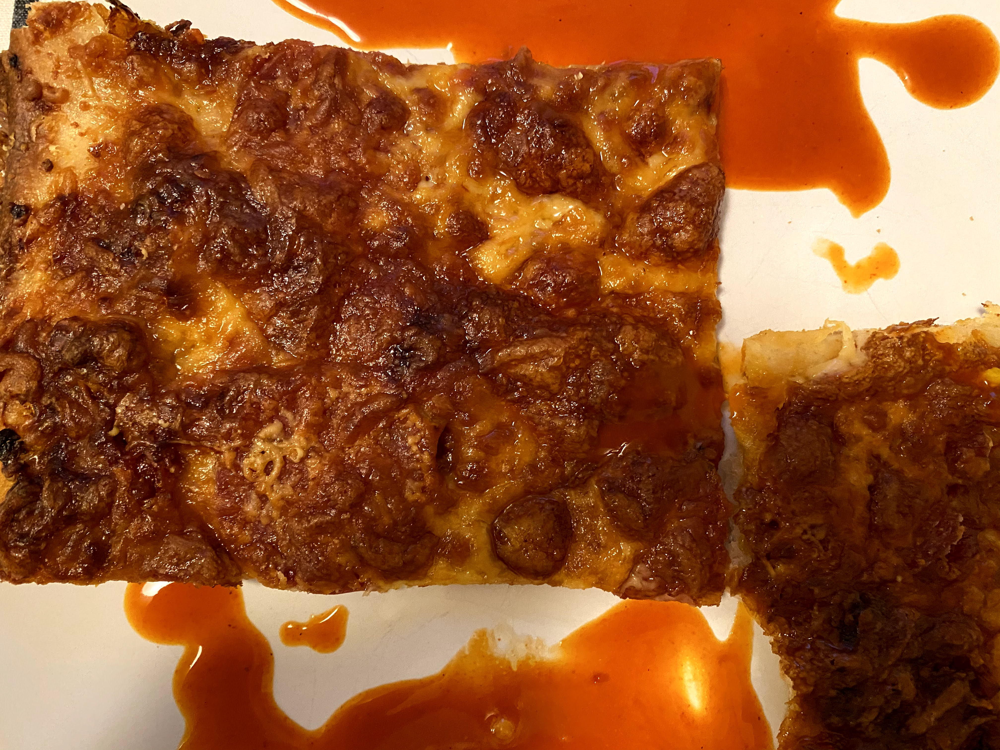

Chi-Pie - Grandma-Style Pizza

Cheese version shown above.↑
Chi-Pie - Grandma-Style Pepperoni-no-Baloney
Pizza
Chi-Pie is whatever you want it to be.
Many people associate the Chicago pizza
scene with deepdish or pie looking pizzas,
hence the name chi-pie. My personal
prefference is the grandma style pizza
that might be more associated with Detroit
or Brooklyn. Don't be fooled it has a
serious following in the Chicagoland
pizza scene.
This is a simple pan-style recipe that
results in a crispy, cheese, almost fried
foccacia dough. For best results, keep the
ingredients to a minimum, use a dry mozzerella
and do your best to make sure the dough has
risen sufficiently.
Chi-pie Grandma-Style Dough Ingredients
Bon Appetit's Grandma Style Dough
-
1 envelope active dry yeast (about 2¼ tsp.)
-
2 Tbsp. plus ½ cup extra-virgin olive oil,
plus more for bowl
-
2 tsp. kohser salt
-
4 cups all-purpose flour, divided, plus more
for bowl
Chi-Pie DAP (Dough Action Plan)
-
Stir together yeast and 1¾ cups warm water
(40-42°) in the bowl of a stand mixer; let
stand until yeast starts to foam, about 10 minutes.
-
Mix in 2 Tbsp. oil, then salt and 2 cups flour.
Attach dough hook and mix until just combined.
Scrape down sides of bowl. Add another 2 cups
flour, a cup at a time, mixing until incorporated
and a shaggy dough forms, about 3 minutes.
-
Increase speed to medium and mix until dough is
soft and elastic and starts to pull away from
sides of bowl, 5-6 minutes. It will still be
somewhat sticky. Place dough in a lightly oiled
bowl and cover with plastic wrap. Chill 24 hours.
-
Coat an 18x13" rimmed baking sheet with remaining
½ cup oil. Turn out dough onto a rimmed baking
sheet and let sit 10 minutes to take off the chill.
Gently and gradually stretch dough until it reaches
edges and all 4 corners of baking sheet. (If dough
springs back or is stiff to work with, let it rest
a few minutes before continuing. You may need to
let it rest more than once.)
-
Cover dough on baking sheet tightly with plastic
wrap and let sit in a warm place (but not too
warm!—about 70° is ideal for yeast to grow)
until it is puffed and full of air bubbles, 30-40
minutes.
Chi-Pie Grandma-Style, Pepperoni-no-Baloney
Pizza Ingredients.
-
Choose a pizza sauce of your liking, I often
use a napoli or arrbiata style pasta sausce
1-2 cups should be enough depending how saucy
you like it.
-
100-200 grams of pepperoni sausage, or spicy
salami. Chorrizo is also nice.
-
300-400 grams of dry mozzerella or a well drained
wet mozzerella cheese.
-
100 grams of parmigiano reggiano or other quality
parmigian cheese.
-
2 Tbsp dried oregano
-
salt and pepper for garnish, a couple grinds or
pinches will do over the top.
-
Enough olive oil to coat the bottom of your pizza pan.
Chi-Pie PAP (Pizza Action Plan)
-
Before you begin, turn your heat loving oven
up to 200° (celcius is or bust) and let it
get good and hot, with the fan on if you have one
for 45-50 min.
-
Flatten your room temperature dough into a well
oiled aluminum or steel baking pan. The pan
have be at least 4-5cm deep. If the dough doesn't
want to strech out or if it's still a little cold,
rest it in pan for 5 min and go at it again until
the dough is all the way to the edges of the pan
and even up the sides a bit.
-
With your dough in place, sausce it to your desired
level of sauciness, which will thicken as the pizza
cooks. Use care!
-
Spread your mozzerella and Parmigiana all over the
place, cover that pizza to the edges. Do it! save
a little sprinkle of both to put on some off your
pepperoni.
-
Give the cheeses a grind of pepper, salt, and a
sprinkle or oregano. Bring the flavor!
-
Now do the same with the pepperoni, cover the surface,
so you can just make out what is below. Don be shy!
-
Sprinkle the remaining cheeses in a random a fashion
over the top of the pepperoni, just a little is needed
or skip it all together. We want that pepperoni goodness
to get crispy.
-
Toss that magnificent pizza into the oven, and keep
an eye on it for 25-35 min. When the pepperoni's
look good and crispy but not too browned, it is time
to bring it out, let it cool for 10 min. You will
want to run a spatula around the edges to help release
the pizza.
-
Either cut the pizza in the pan with a pizza cutter, or
if possible, remove it an sever it on a wooden cutting
board or something similiar. Enjoy!
Recipes Home